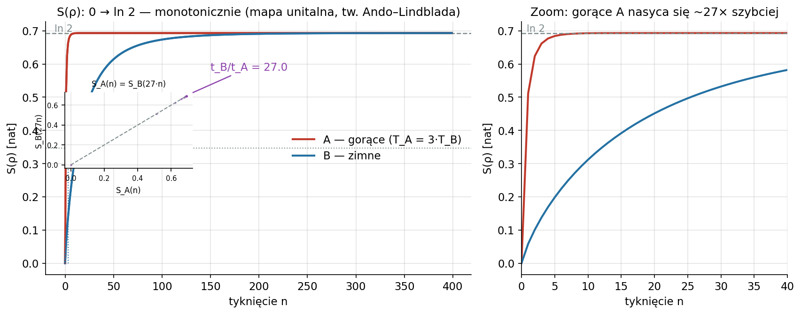
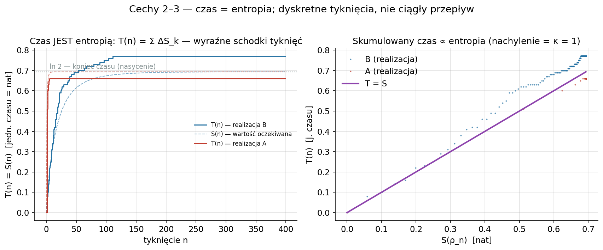
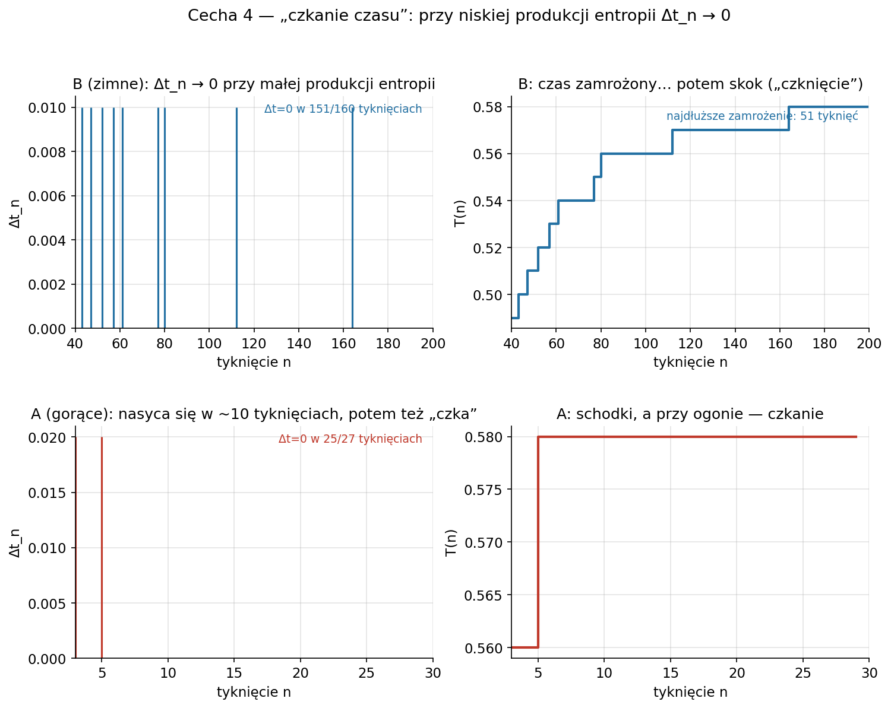
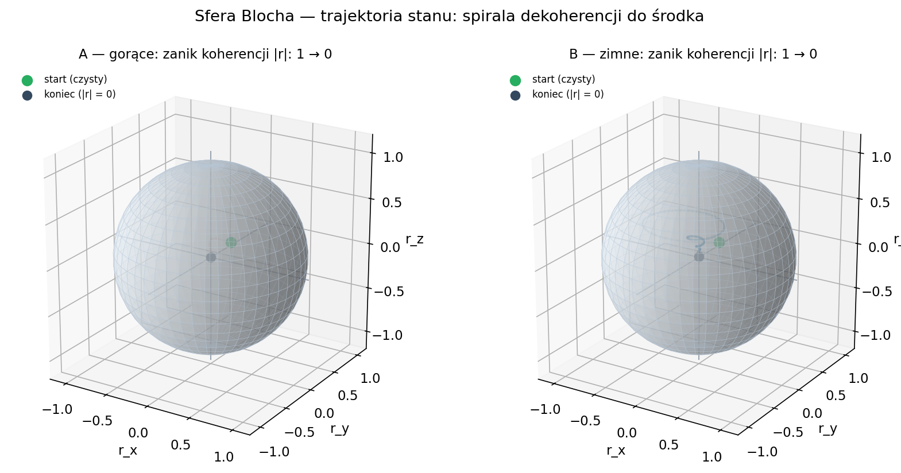
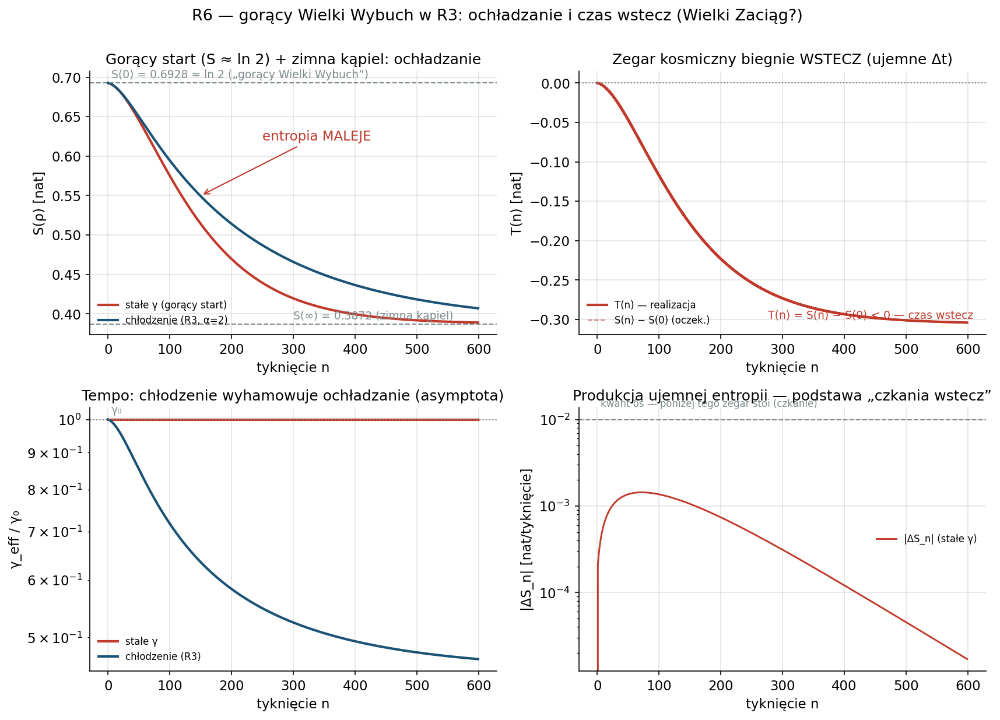
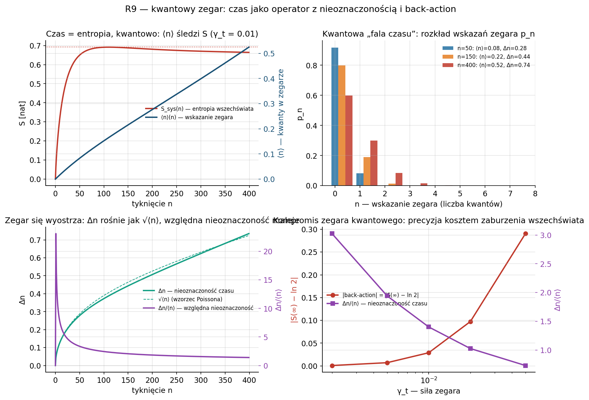
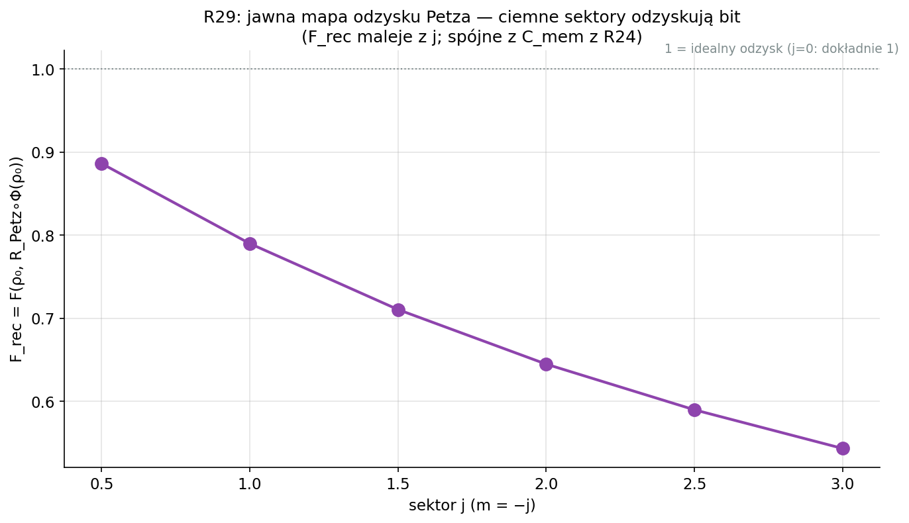
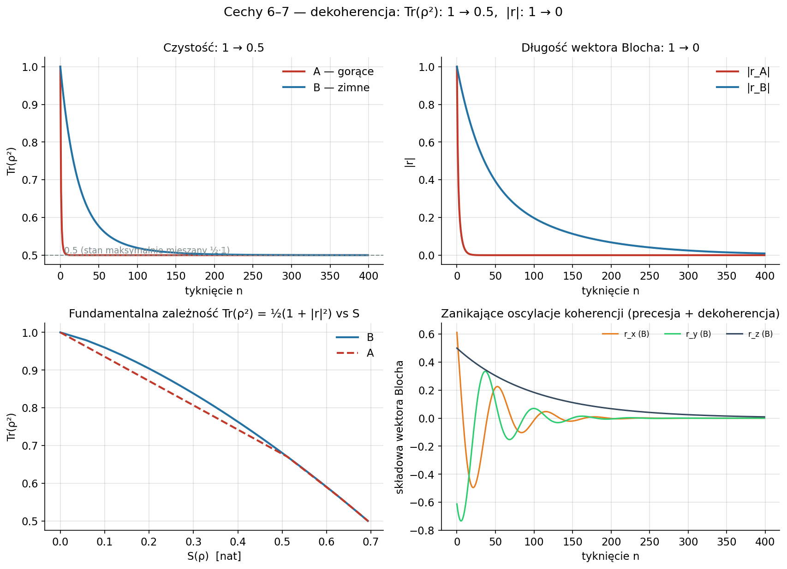

Czas jest entropią. Tyknięcia są dyskretne. Czas potrafi „czkać”.
Kosmologiczny model łączący mechanikę kwantową układów otwartych (równanie Lindblada dla kubitu w kąpieli termicznej) z relacyjną koncepcją czasu: zegar kosmiczny nie mierzy upływu zewnętrznego czasu, lecz kumuluje produkowaną entropię.
Kubit w kąpieli termicznej Lindblada — z jednego mechanizmu wynika siedem obserwowalnych zjawisk.
Monotoniczny wzrost dzięki mapie unitalnej (tw. Ando–Lindblada); produkcja entropii σ ≥ 0 (tw. Spohna).
A produkuje entropię szybciej niż B — temperatura ustawia tempo, nie cel. s ∝ T³.
Czas kosmologiczny jest sumą przyrostów entropii — nie jest postulatem, lecz wynikiem.
Czas kwantowany w „bitach” δs — jawne schodki, nie ciągły przepływ.
Przy niskiej produkcji entropii Δt_n → 0 — długie zamrożenia, potem skok.
Czas w gorącym otoczeniu płynie szybciej; w granicy ciągłej t→0 stosunek jest dokładny.
Czystość Tr(ρ²) i długość wektora Blocha |r| zanikają wraz z termalizacją.
Mikrofizyka: równanie Lindblada dla kubitu w kąpieli. Makrofizyka: zegar kosmiczny zbudowany z przyrostów entropii.
dρ/dt = −i[H,ρ] + Σ_k ( L_k ρ L_k†
− ½{L_k†L_k, ρ} )
ρ_n = e^(ℒτ) ρ_(n−1) (mikro-tyknięcie τ)
σ = −d/dt S(ρ‖ρ_eq) ≥ 0 ΔS_n = S(ρ_n) − S(ρ_(n−1)) T(n) = Σ_k Δt_k, Δt_n = κ·ΔS_n
s ∝ T³ (entropia właściwa promieniowania) γ_A/γ_B = (T_A/T_B)³ T_A = 3·T_B ⟹ γ_A = 27·γ_B
δs — kwant entropii („bit") k_n ~ Poisson(ΔS_n/δs) Δt_n = k_n · δs ΔS_n mały ⟹ P(k_n=0) wysokie ⟹ Δt_n=0
η = e^(−βΩ) a = 2γ/(1+η) (emisja) b = 2γη/(1+η) (absorpcja) S(∞) = H(1/(1+η)) < ln 2
Odzyskiwalność informacji: ℛ_σ(X) = σ^(1/2) E*(E(σ)^(−1/2) X E(σ)^(−1/2)) σ^(1/2) Dowód formalny: PETZ_DOWOD.md
Model rozwijany w trzech osiach: termodynamika, wiele ciał, kosmologia — plus dziewięć iteracji ENTROPIA-1.x (kwantowy zegar, odzyskiwalność, koszt fizyczny, program eksperymentalny).
Model jest fenomenologiczną zabawką, ale zbudowaną na prawdziwym prawie: s ∝ T³. Poniżej kluczowe testy z PREDYKCJE.md.
EKSPERYMENT.md.Pełny zestaw w figury/, interaktywny raport w raport.html.








Pakietowany jako model-entropia v5.0.0, testowany pytest, 25 modułów rozszerzeń.